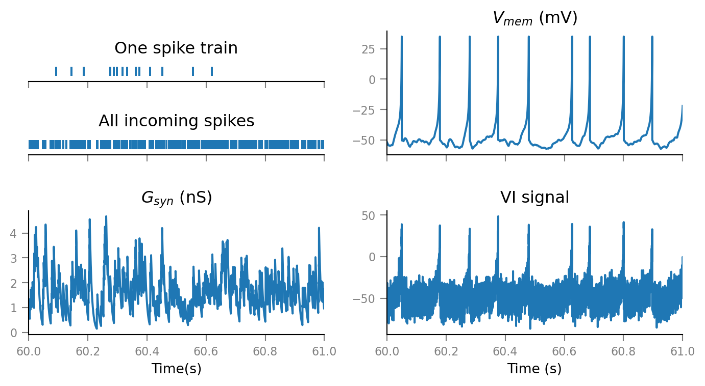

2021-01-01 • Debug parallel _calc_STA¶
Throwaway nb, but still wanna document/archive.
Debugging wrong _calc_STA due to parallel numba.
Setup¶
from voltage_to_wiring_sim.support.notebook_init import *
Preloading:
- numpy … (0.10 s)
- matplotlib.pyplot … (0.21 s)
- numba … (0.30 s)
Importing from submodules … ✔
Imported `np`, `mpl`, `plt`
Imported codebase (`voltage_to_wiring_sim`) as `v`
Imported `*` from `v.support.units`
Setup autoreload
v.print_reproducibility_info()
This cell was last run by tfiers on yoga
on Fri 01 Jan 2021, at 21:36 (UTC+0100).
Last git commit (Fri 01 Jan 2021, 15:02).
Uncommited changes to:
M codebase/voltage_to_wiring_sim/N_to_1_simulation.py
M codebase/voltage_to_wiring_sim/spike_trains.py
M codebase/voltage_to_wiring_sim/support/plot_style.py
?? notebooks/2020_12_30__vary_params.ipynb
Sim¶
params = v.N_to_1_simulation.default_params
v.pprint(params)
N_to_1_SimParams
----------------
time_grid = {'duration': 600, 'start': 0, 'timestep': 0.0001}
num_incoming_spike_trains = 15
spike_rate = 20
Δg_syn = 8E-10
τ_syn = 0.007
neuron_params = {'C': 1e-10, 'a': 30.0, 'b': -2e-09, 'c': -0.05, ...}
imaging_spike_SNR = 10
(All quantities are in unprefixed SI units: second, Hz, Farad, Siemens …. Pretty printing, in human readable units, is not here yet).
%%time
sim_result = v.N_to_1_simulation.simulate(params);
Wall time: 1.01 s
A short time slice to visualise part of the generated signals.
zoom = v.TimeGrid(
start=1 * minute,
duration=1 * second,
timestep=params.time_grid.timestep
);
v.N_to_1_simulation.plot(sim_result, zoom)

STA = v.calculate_STA(sim_result.VI_signal, sim_result.spike_trains[0], window_duration=150 * ms);
v.plot_STA(STA)

def calculate_STA(
VI_signal,
spike_times,
window_duration,
):
dt = VI_signal.timestep
spike_indices = v.spike_trains.to_indices(spike_times, dt)
window_tg = v.TimeGrid(window_duration, dt)
STA = _calc_STA(VI_signal, spike_indices, window_tg.N)
return v.support.Signal(STA, dt)
from numba import njit, prange
@v.support.array_wrapper.strip_NDArrayWrapper_inputs
@njit(parallel=False)
def _calc_STA(
VI_signal: np.ndarray,
spike_indices: np.ndarray,
window_length: int,
) -> np.ndarray:
num_spikes = len(spike_indices)
num_windows = 0
STA = np.zeros(window_length)
for i in prange(num_spikes):
start_ix = spike_indices[i]
end_ix = start_ix + window_length
if end_ix < len(VI_signal):
STA += VI_signal[start_ix:end_ix]
num_windows += 1
return STA / num_windows
len(sim_result.spike_trains[0])
12001
profile¶
N = 10_000_000
sig = np.random.randn(N)
times = np.random.randint(0, N, size=1_000_000);
parallel¶
%%time
STA = _calc_STA(sig, times, 1500);
Wall time: 559 ms
serial¶
%%time
STA = _calc_STA(sig, times, 1500)
Wall time: 1.11 s
Ok nice, we still get 2x improvement :)
found cause¶
STA = calculate_STA(sim_result.VI_signal, sim_result.spike_trains[0], window_duration=150 * ms);
v.plot_STA(STA)
11998

STA = calculate_STA(sim_result.VI_signal, sim_result.spike_trains[0], window_duration=150 * ms);
v.plot_STA(STA)
11998

Vanilla code not parallel (correct):¶
STA = calculate_STA(sim_result.VI_signal, sim_result.spike_trains[0], window_duration=150 * ms);
v.plot_STA(STA)
11998
Vanilla code but parallel:¶
STA = calculate_STA(sim_result.VI_signal, sim_result.spike_trains[0], window_duration=150 * ms);
v.plot_STA(STA)
108006
Parallel with copying num_windows (no change):¶
STA = calculate_STA(sim_result.VI_signal, sim_result.spike_trains[0], window_duration=150 * ms);
v.plot_STA(STA)
108006

ca
v.print_reproducibility_info(verbose=True)
This cell was last run by tfiers on yoga
on Wed 30 Dec 2020, at 18:17 (UTC+0100).
Last git commit (Wed 30 Dec 2020, 18:16).
Uncommited changes to:
M notebooks/2020_12_30__test_all_connections.ipynb
Platform:
Windows-10
CPython 3.8.3 (C:\conda\python.exe)
Intel(R) Core(TM) i7-10510U CPU @ 1.80GHz
Dependencies of voltage_to_wiring_sim and their installed versions:
numpy 1.19.2
matplotlib 3.3.2
numba 0.51.2
seaborn 0.10.1
scipy 1.5.2
scikit-learn 0.23.2
preload 2.1
py-cpuinfo 7.0.0
nptyping 1.3.0
tqdm 4.55.0